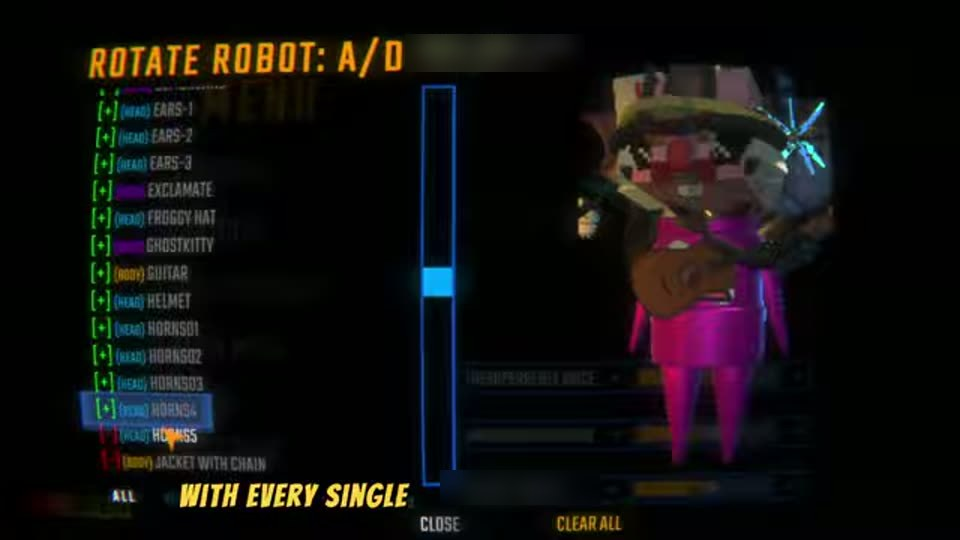
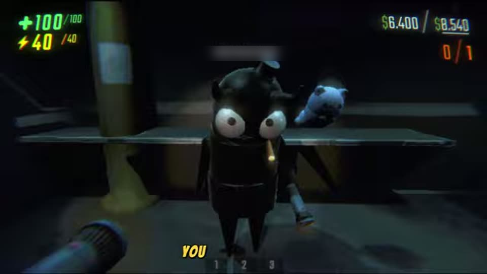
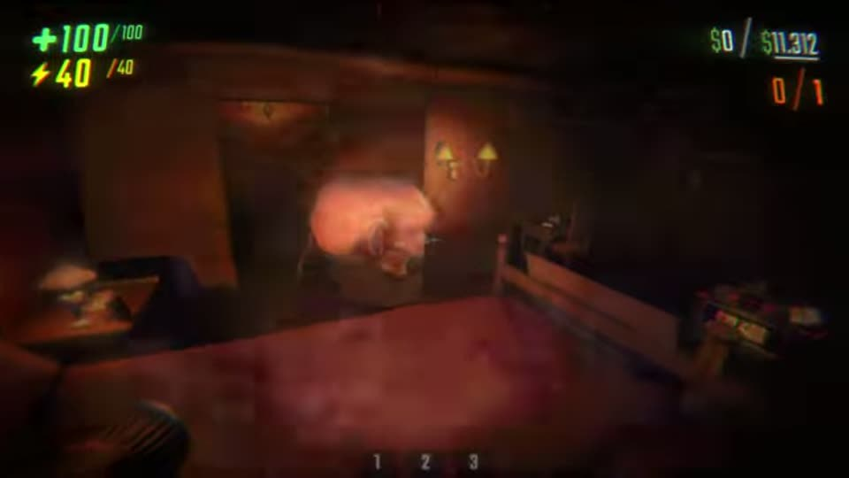
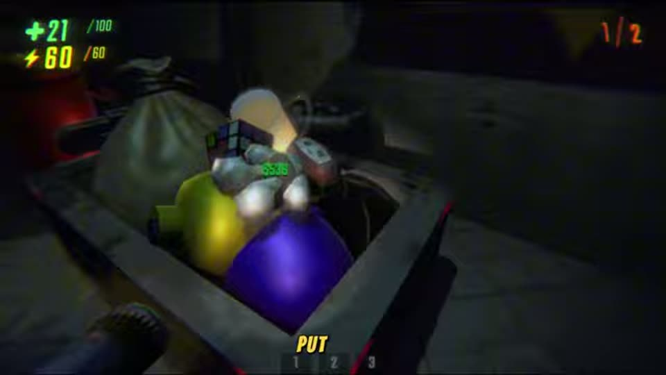
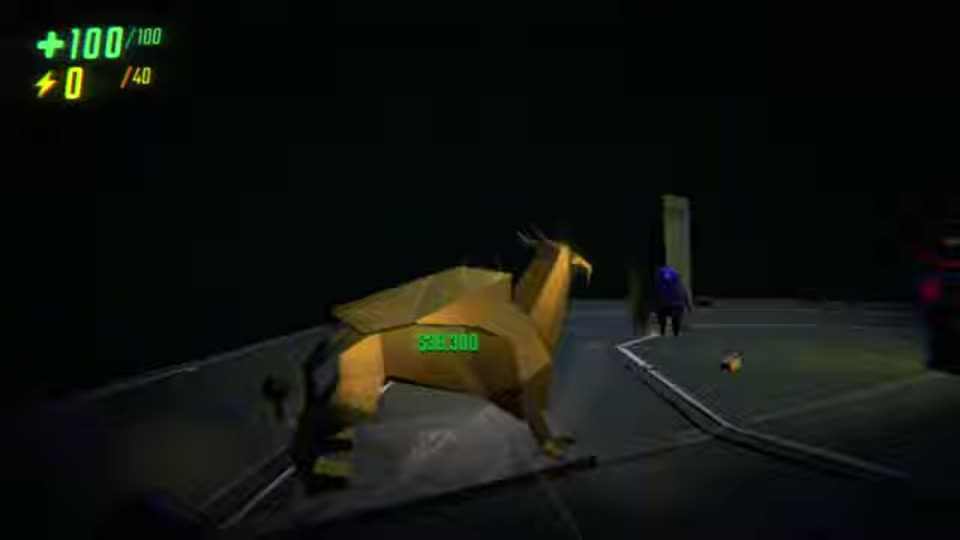

My review of R.E.P.O.: I wore every hat at once

Before we left the lobby, I used a cosmetic mod menu to put every hat and accessory on one pink robot and then tried to play a horror game like that in R.E.P.O. It is an early access online co-op horror game from semiwork, out on Steam since February 26, 2025, for up to six players. You carry valuable, fully physics-based objects out to an extractor, even the monsters are affected by gravity, and proximity voice chat means you have to know when to stay quiet. I played with three friends.
The costumes came from MoreHead, a cosmetic mod menu, and it let me stack everything at once: a bamboo copter, a cigar, clown hair, a clown nose, a guitar, a skirt and more. The look, in my words: "I am all things at once. I am an everything bagel." In first person I could not even see the result. "I can't even see it. I can't even appreciate it."

Things went sideways immediately. A friend tried to beat a floating skull monster with a trophy, and it killed both of us. In a free-for-all arena I struggled to lift heavy items, fought with an inflatable hammer and died. A giant floating head ate a teammate, I put my teammate's head in the cart, and the head monster chased me down. A blind enemy with a shotgun killed me in a doorway.

I found my own job in the cart. I rode inside it and demanded that a friend push me: "As your fashion queen, I demand you cart me around." A duck followed a friend and quacked, which alerted the shotgun enemy, who killed him. Later I stood on a table to evade a small doll monster that cannot climb. Once I got a golden griffin statue and the heads of my dead teammates onto the extraction platform with one health left, and the whole team came back.

Near the end we stopped to argue about whether a giant statue was a dinosaur or an alpaca. A psychic floating monster lifted me and slammed me around until I died at a door. Near the end, a white monster grabbed me with its tongue and a laser monster finished the job.

This is a very good game to fail at with friends. The store tells you to handle the loot with care, and the monsters make that hard. A duck's quack got one friend shot, and another friend carefully carrying a giant harp through doorways while a monster chased another teammate looked like real skill. A clean run is rare here, and the failures are the fun. Store page: R.E.P.O.
More games I broke with mods: the Lethal Company duck crew, The Pale Mimic and Forest Escape.